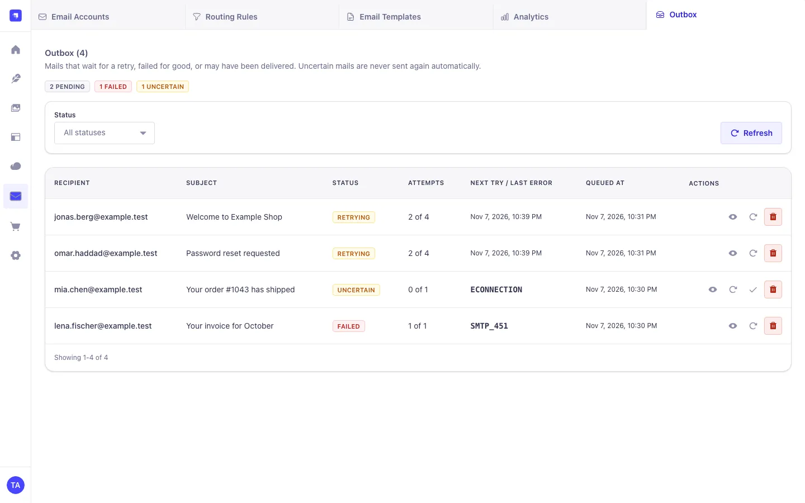
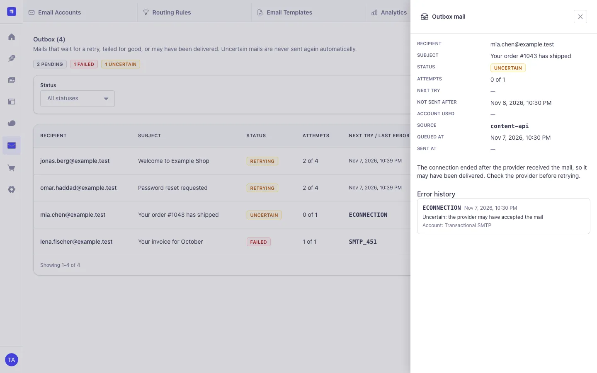
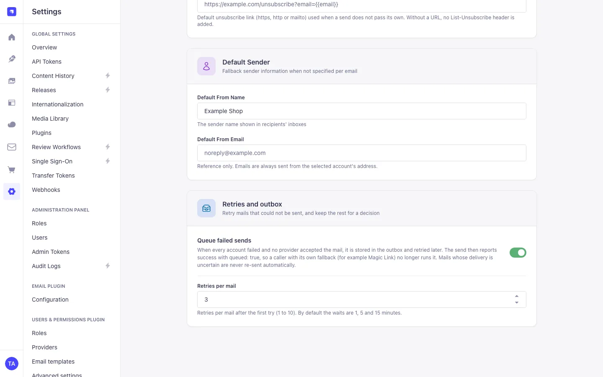

Email accounts
Gmail, Microsoft 365 and Yahoo with OAuth 2.0, any SMTP server (optional DKIM), SendGrid and Mailgun. Hourly and daily quotas, priorities, a primary account and test sends. Credentials are encrypted with AES-256-GCM.
Connect several SMTP and API accounts, route mail by rules, keep quotas, fail over
without sending anything twice, and retry what did not go out. Your existing
strapi.plugin('email') calls keep working.

Everything lives in the Strapi admin under MagicMail: email accounts, routing rules, templates, analytics and the outbox, in five languages, light and dark.
Gmail, Microsoft 365 and Yahoo with OAuth 2.0, any SMTP server (optional DKIM), SendGrid and Mailgun. Hourly and daily quotas, priorities, a primary account and test sends. Credentials are encrypted with AES-256-GCM.
Pick the account by email type, recipient, subject, template or a custom value, with a fallback account. Rules pointing to a missing or inactive account are flagged.
The next account is tried only when the error proves the provider did not accept the mail: a refused connection, an SMTP 4xx reply, HTTP 429 or 503. A connection lost after the message was sent stops the send instead.
Opt-in per send or for every failed send: 3 retries by default after 1, 5 and 15 minutes, idempotency keys, and an Outbox tab to retry, discard or mark uncertain mails as sent.
Signed SendGrid and Mailgun bounce and complaint webhooks mark the delivery log and
emit magic-mail.delivery.* events for other plugins.
Reads bounce reports from SMTP, Gmail and Microsoft 365 mailboxes, marks the mail as bounced or deferred, and rejects typo and test domains before sending.
Visual designer (Unlayer) or plain HTML and text, Mustache variables, versions with restore, import and export, and the Users & Permissions reset and confirmation mails.
A delivery log with server-side search, opens and clicks per email. Tracking keeps truncated IPs only and expires on a schedule you set.
strapi.plugin('email'), sendTemplatedEmail(), the admin
password reset and the Users & Permissions mails are routed through MagicMail
without code changes.
Synthetic data (example.test addresses) on an isolated Strapi 5.61 host.
Select an image to open it at full size.






Requires Node.js >=22.12.0 <=26.x.x, Strapi ^5.57.0 and
@strapi/plugin-users-permissions (part of every default Strapi app).
Install the package.
npm install strapi-plugin-magic-mail
# or: yarn add strapi-plugin-magic-mail / pnpm add strapi-plugin-magic-mailEnable it.
module.exports = () => ({
'magic-mail': { enabled: true },
});Set the encryption key (required outside development and test; keep it stable).
node -e "console.log(require('crypto').randomBytes(32).toString('hex'))"
# .env
MAGIC_MAIL_ENCRYPTION_KEY=<the generated value>
Run npm run build and npm run develop, open
MagicMail → Email Accounts, add an account and send a test to
yourself.
| MagicMail | Strapi | Node.js | Databases |
|---|---|---|---|
| 4.x | ^5.57.0, acceptance host 5.61.0 |
>=22.12.0 <=26.x.x, CI on 22 and 24 |
PostgreSQL, MySQL 8, SQLite. Several processes: PostgreSQL tested, MySQL not load-tested |
The packed plugin installs without plugin warnings into a fresh
create-strapi-app@5.61 project with yarn 1, npm 11 and pnpm. Upgrading?
Read the
migration notes.
Off by default. Turn it on per send with queue: true, or for every failed
send with Settings → MagicMail → Queue failed sends.
await strapi.plugin('magic-mail').service('email-router').send(
{ to: 'user@example.com', subject: 'Welcome', html: '<p>Hello</p>' },
{ queue: true, idempotencyKey: 'signup-42:welcome' }
);
// { success: true, queued: true, status: 'pending', outboxId, emailId, ... }| Outcome | Outbox | The caller sees |
|---|---|---|
| No provider accepted it (SMTP 4xx, refused connection, HTTP 429 or 503) | Pending, retried after 1, 5, 15 minutes | { success: true, queued: true } |
| Every account over its quota | Pending until the next quota hour, no retry used | { success: true, queued: true } |
| The provider may have accepted it (lost connection after the data, HTTP 500) | Uncertain, never re-sent automatically | The original error, with magicMailOutboxId |
| Permanent refusal (SMTP 5xx, HTTP 400, invalid input) | Not stored | The original error |
Queued mails are encrypted in the database and deleted when sent or discarded. Login and
one-time-code mails should use queue: false or a notAfter;
MagicMail never sends a queued mail after notAfter.
Full outbox guide.
Off by default. Turn it on per account in the wizard. MagicMail reads the bounce reports that land in the sending mailbox and updates the delivery log.
| Account | Read via | Owner step |
|---|---|---|
| SMTP | IMAP with the SMTP login | Turn it on |
| Gmail / Google Workspace | Gmail API or IMAP with app password | Grant read access, or create an app password |
| Microsoft 365 | Microsoft Graph | Grant Mail.Read (admin consent in some tenants) |
| SendGrid, Mailgun | Signed webhooks | Save the webhook key |
Reports are matched by the original Message-ID. 5.x.x marks
the mail as bounced, 4.x.x as deferred. Only reason codes are stored, never
message content. Before sending, typo domains such as googelmail.com and
reserved test domains are rejected.
Bounce monitoring guide.
Railway replicas and pm2 cluster workers work on one database, without sticky sessions or Redis.
FOR UPDATE SKIP LOCKED on PostgreSQL, so no mail is claimed twice; a
process killed while a provider had the mail leaves it uncertain, never re-sent.
APP_KEYS, MAGIC_MAIL_ENCRYPTION_KEY,
MAGIC_MAIL_TRACKING_SECRET and
MAGIC_MAIL_OAUTH_STATE_SECRET everywhere, and
server.proxy.koa: true behind a proxy. Each process logs short secret
fingerprints at startup to compare.
Accounts, rules, templates and settings are managed in the admin. The plugin config only holds deployment choices; every key is optional and validated at startup.
| Variable | Purpose |
|---|---|
MAGIC_MAIL_ENCRYPTION_KEY |
Credential and outbox encryption key, 32+ bytes. Required unless
NODE_ENV is unset, development or test.
|
MAGIC_MAIL_ENCRYPTION_KEY_PREVIOUS |
Old key during a rotation (decrypt only). |
MAGIC_MAIL_TRACKING_SECRET, …_PREVIOUS |
Tracking hash secret and old values that stay valid. |
MAGIC_MAIL_OAUTH_STATE_SECRET |
OAuth state signing secret (default: derived from the encryption key). |
| Key | Default | Effect |
|---|---|---|
contentApi.allowUserRoles |
false |
Let users-permissions roles call the send routes |
quotaTimezone |
'UTC' |
Time zone of the quota windows |
tracking.eventRetentionDays |
90 |
Delete open and click events after this many days |
tracking.allowedLinkHosts |
[] |
Hosts that Content-API mails may click-track |
rateLimit.store |
'database' |
Shared counters; 'redis' or 'memory' optional |
queue.worker |
true |
false keeps this process from sending queued mail |
queue.backoffMs |
[60000, 300000, 900000] |
Waits before retry 1, 2 and 3 |
server.url to your public https URL: OAuth redirect URIs and
tracking links are built from it, and in production MagicMail never falls back to
localhost. Every option is in the
configuration reference.
Each admin route requires an authenticated administrator plus
plugin::magic-mail.read, .manage, .test-send,
.queue.read or .queue.manage; .access only shows
the menu entry.
********.
from is pinned to the sending account, headers are
allowlisted, and file-path or URL attachments are rejected.
Found a vulnerability? Use private vulnerability reporting.
Content API routes live under /api/magic-mail; admin routes under
/magic-mail use the admin session and the permissions above.
| Method | Path | Purpose |
|---|---|---|
POST |
/send |
Send through the router with all send options, optional queue (API token). |
POST |
/send-message |
Simple email: recipients, subject, message or template (API token). |
GET |
/track/open/:emailId/:recipientHash |
Open-tracking pixel (public). |
GET |
/track/click/:emailId/:linkHash/:recipientHash |
Click redirect (public). |
POST |
/webhooks/sendgrid/:accountId,
/webhooks/mailgun/:accountId
|
Signed bounce and complaint events. |
curl -X POST https://cms.example.com/api/magic-mail/send \
-H "Authorization: Bearer $MAGIC_MAIL_API_TOKEN" \
-H "Content-Type: application/json" \
-d '{ "to": "customer@example.com", "templateId": 100,
"templateData": { "user": { "firstName": "Ada" } } }'{ "success": true, "accountUsed": "Transactional SMTP",
"messageId": "<…@example.com>", "emailId": "…" }Admin routes cover accounts, OAuth, routing rules, templates and versions, analytics, the outbox and settings. The README lists every route with its permission and examples.
No. MagicMail wraps the provider of @strapi/email, so
strapi.plugin('email').service('email').send(), the admin password
reset and the Users & Permissions mails are routed through it.
Not because of MagicMail's own retries. Failover moves on only when the provider provably did not take the mail, and uncertain mails wait for your decision in the Outbox tab.
Mails sent through the Strapi email service fall back to the email provider you configured before. The router service and the Content API return the error. With Queue failed sends on, a mail blocked only by quotas is retried in the next quota hour.
No. The database coordinates everything; Redis is optional for the rate limiter.
The Unlayer editor loads from editor.unlayer.com in the editor user's
browser. The plain HTML and text editor works without it, and sending never needs
it.
No. MagicMail is MIT licensed with no license key, tiers or usage limits.
Actively maintained. Releases are cut by semantic-release from Conventional Commits on
main and published to npm with provenance.
Every pull request runs lint, format check, tests, build, export and server-bundle
verification, npm pack --dry-run and a production audit on Node.js 22 and
24.